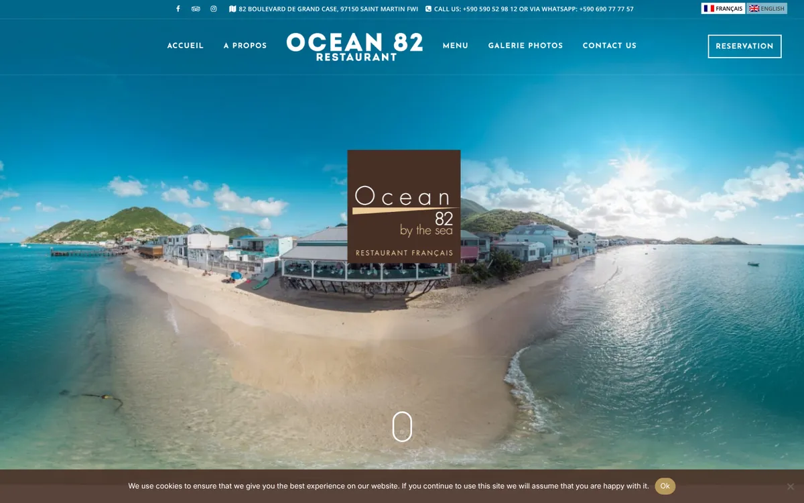
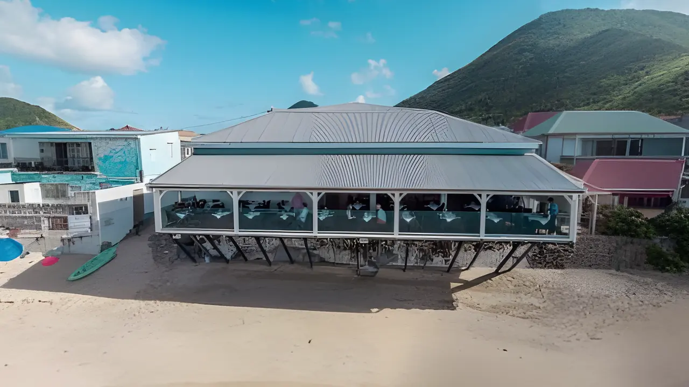
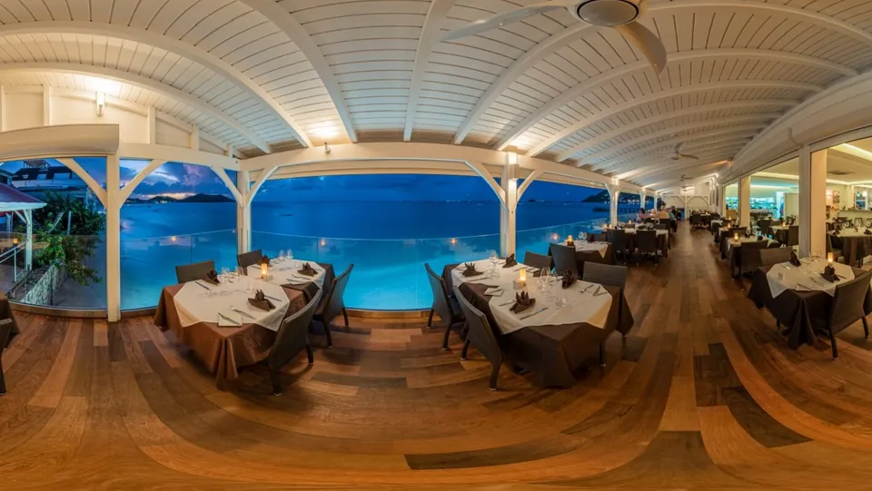
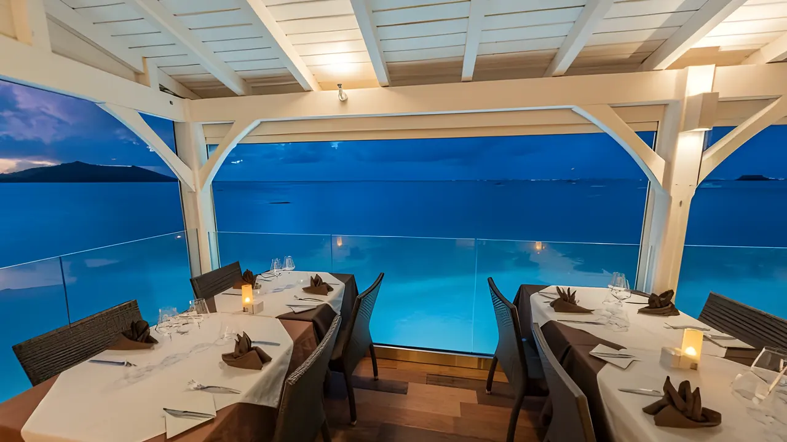
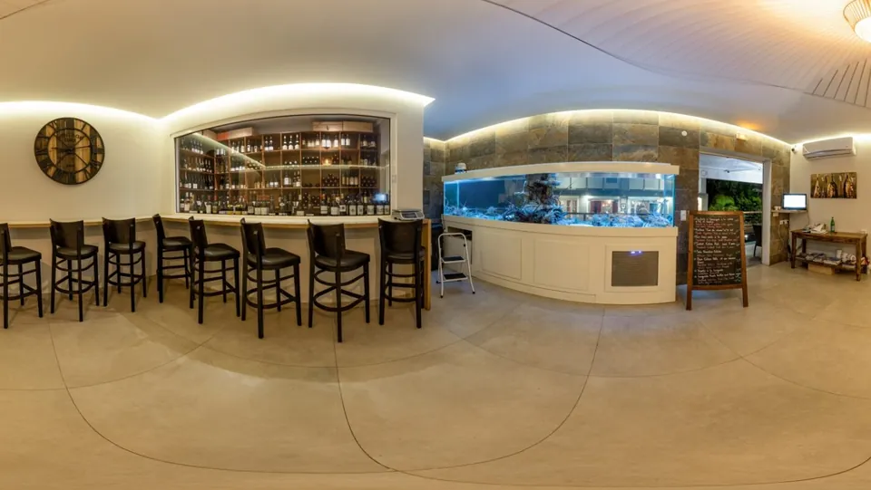

Mêmes photos, mêmes textes, même carte 2027 : seul le design change. Chaque maquette est une page complète, en français et en anglais, pensée pour le téléphone autant que pour l’ordinateur — avec, dans les trois, la visite du restaurant en 360°.
Sombre et cinématographique. La baie de Grand Case apparaît en « petite planète » ; en faisant défiler la page on se pose devant le restaurant, on pousse la porte, on passe devant le vivier et la cave, on traverse la salle jusqu’à la terrasse.
La visite 3D est le site : chaque pièce porte son contenu (maison, vivier, cave, carte, bar, réservation).
« Visite libre » : on regarde autour de soi et on passe d’une pièce à l’autre.
Version fixe automatique si l’appareil ne gère pas la 3D ou si les animations sont désactivées.
Quatre photos du site actuel sont des panoramas 360° du restaurant. Affichées comme de simples images, elles se déforment (plage et horizon courbés, plafonds tordus). Les maquettes les utilisent pour ce qu’elles sont — une visite — et en tirent aussi des vues « redressées », cadrées comme de vraies photos d’architecture.

Aujourd’hui L’accueil du site actuel

Dans les maquettes La même photo, redressée

Aujourd’hui La terrasse, à plat

Dans les maquettes La terrasse, redressée

Aujourd’hui L’entrée, à platDans les maquettes Le vivier, redressé
Les autres photos (plats, desserts, cave, bar, équipe) sont recadrées autour de leur sujet : chaque format — carré, portrait, bandeau — est découpé à partir d’un point d’intérêt, pour ne jamais couper une assiette ou un visage.
Plus léger, plus rapide
De 6 Mo à moins de 1,5 Mo.
Mesures faites dans le même navigateur, page d’accueil, avant tout défilement puis après avoir parcouru toute la page. Les maquettes n’utilisent ni jQuery ni bibliothèque : images AVIF/WebP à la bonne taille, polices hébergées sur place, visite 3D chargée seulement quand on s’en approche.
Site actuel
1 · Immersion
2 · La Maison
3 · Lagon
Requêtes au premier affichage
89
16
—
—
Poids au premier affichage
6,0 Mo
0,7 Mo
—
—
Poids après toute la page
6,0 Mo
1,4 Mo
—
—
Fichiers de script
42
3
—
—
Feuilles de style
28
0 (intégrée)
0 (intégrée)
0 (intégrée)
Site actuel : valeur basse, les services tiers (Google Fonts, reCAPTCHA, statistiques) n’ont pas pu être comptés. Maquettes : poids transférés avec compression du texte, visite 360° comprise.
À savoir, à valider
Quelques points avant de choisir.
Photos 360°. Les quatre panoramas du site sont des copies réduites (1 920 px). Ils ont été agrandis par un traitement de netteté pour tenir en plein écran ; avec les fichiers d’origine du photographe, la visite serait encore plus fine, sans rien changer au code.
Plats et légendes. Les noms et prix viennent de la carte 2027. L’association entre certaines photos et les plats de la carte (magret, tataki de thon, fruit en trompe-l’œil…) reste à confirmer par le chef.
Allergènes. Les pictogrammes de la carte papier ne sont pas reproduits : ils doivent être saisis à partir d’une source vérifiée.
Anglais. Les textes anglais reprennent ceux du site ; quelques coquilles de la carte ont été corrigées.
Réservation. Les maquettes n’ont pas de serveur : le formulaire prépare un message WhatsApp ou un courriel prêt à envoyer. Il se branchera ensuite sur l’outil de réservation retenu.
Mélanger. Les trois partagent le même contenu et la même visite 360° : on peut prendre le design de l’une et un élément d’une autre.